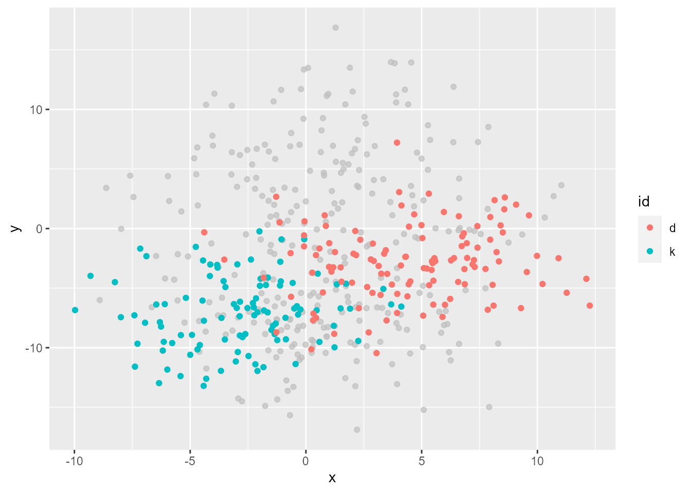
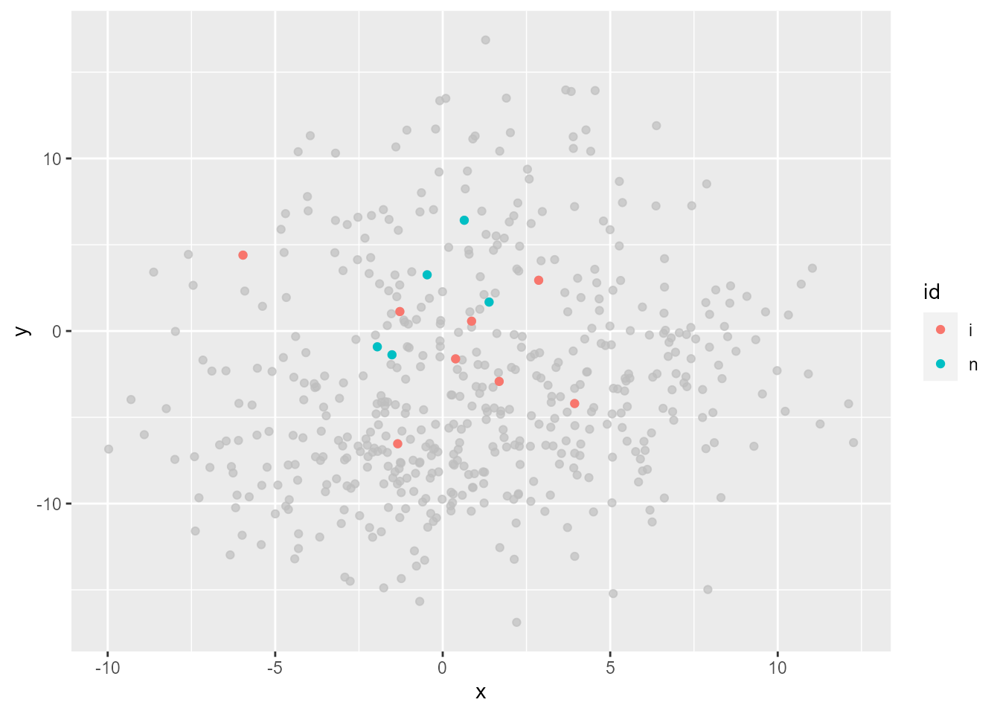

p +gghighlight(n() >=100, use_direct_label =FALSE)

Or small groups.
p +gghighlight(n() <10, use_direct_label =FALSE)

You can also use n() as a non-logical predicate, whose values are used for sorting data and the top max_highlight of rows/groups are highlighted.
# Same result as abovep +gghighlight(-n(), max_highlight =2, use_direct_label =FALSE)
To unhighlight or not to unhighlight…
By default, unhighlighted data are grayed out. unhighlighted_params is the option to override this. Now, you can even choose not to unhighlight at all by specifying explicit NULL to colour or fill!
p +gghighlight(n() <10, use_direct_label =FALSE,unhighlighted_params =list(colour =NULL))
Hmm…, but this is the very same plot as the original one. How can this be useful? Well, remember we still can tweak other parameters like alpha.
p +gghighlight(n() <10, use_direct_label =FALSE,unhighlighted_params =list(colour =NULL, alpha =0.2))
This plot doesn’t look very nice in that the colors are a bit difficult to distinguish. This is mainly because I didn’t come up with some nice data, but it’s generally a tough job to tweak colors by alpha properly, so I don’t recommend this much. But, hope you can find some good use case for this!